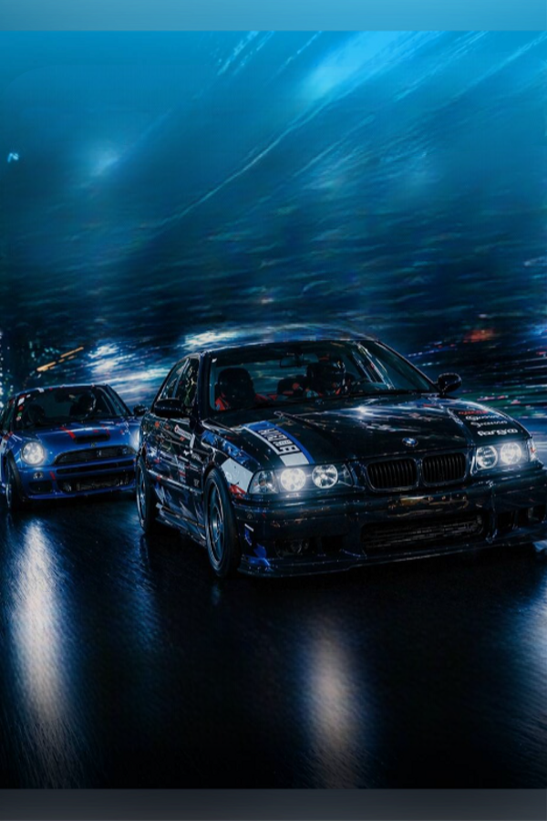
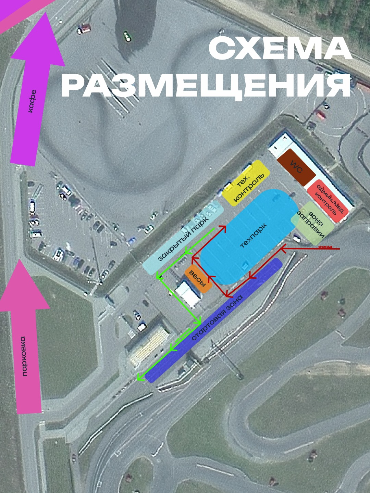

01
1 этап кубка RaceWars
ЗавершеноБрест Альянс
09:00–18:00 · Time-Attack
Официальная платформа чемпионатов

Кубок по тайм-аттаку: чистый круг, точность траектории и борьба с секундомером на разных трассах сезона.
URacing RaceWars 2026 — серия тайм-аттак этапов для пилотов разных классов. Побеждает не контактная борьба, а стабильность, подготовка автомобиля и способность собрать быстрый круг.
На странице собраны этапы сезона, подробный тайминг соревновательного дня, конфигурация трассы Стайки и таблица заявленных участников.
09:00–18:00 · Time-Attack
08:30–19:30 · Time-Attack
09:00–18:00 · Time-Attack
09:00–18:00 · Time-Attack
09:00–18:00 · Time-Attack
09:00–15:30 · Time-Attack
Подробное расписание используется как базовый формат для следующих этапов

ФИО, автомобиль, класс и текущие очки сезона
| Место | ФИО | Автомобиль | Класс | Очки |
|---|---|---|---|---|
| 1 | Мышковец Артём | Daihatsu Charada G100 | LIGHT | 95 |
| 2 | Змитрачёнок Александр | Honda Fit 3 | LIGHT | 89 |
| 3 | Ивоченко Юрий | Citroen | LIGHT | 84 |
| 4 | Шимаковский Константин | Honda Civic | LIGHT | 80 |
| 5 | Тарасов Владислав | Mazda MX-5 NC | LIGHT | 76 |
| 6 | Ячник Евгений | Mazda 3 | LIGHT | 72 |
| 7 | Ильин Андрей | Toyota GR86 | STREET | 68 |
| 8 | Телегин Андрей | Mazda MX-5 | STREET | 64 |
| 9 | Пузиков Андрей | Honda Civic EK20 | STREET | 61 |
| 10 | Данилова Ирина | Honda Prelude | STREET | 58 |
| 11 | Шпаковский Роман | Mazda MX-5 | STREET | 55 |
| 12 | Иодо Кирилл | Mazda MX-5 ND | STREET | 52 |
| 13 | Бейнарович Виктория | BMW | STREET-PRO | 49 |
| 14 | Рожко Виталий | Civic FK7 | STREET | 46 |
| 15 | Ячник Александр | Mazda RX-8 | STREET-PRO | 43 |
| 16 | Эмпортуло Никита | Honda Civic EK24 | STREET-PRO | 40 |
| 17 | Грецский Сергей | BMW 330i | STREET-PRO | 37 |
| 18 | Саковский Евгений | BMW 230xi | STREET-PRO | 34 |
| 19 | Петровский Максим | Mini JCW GP | RACE | 31 |
| 20 | Коновальщик Алексей | Subaru Impreza | RACE | 28 |
| 21 | Куделька Алексей | Mazda MX-5 | RACE | 26 |
| 22 | Тимошкин Артём | SUBARU WRX | RACE | 24 |
| 23 | Захаренко Валерий | Mini Cooper S (R53) | RACE | 22 |
| 24 | Мезит Дмитрий | Subaru Impreza WRX STI | RACE | 20 |
| 25 | Тимохов Виталий | Porsche Cayman 718 S 2 | UNLIMITED | 18 |
| 26 | Щедрик Евгений | Peugeot 205 TA | UNLIMITED | 16 |
| 27 | Кручинин Алексей | Эстония 21 | UNLIMITED | 14 |
| 28 | Пасынков Алексей | Honda RS2000 ZF | UNLIMITED | 12 |
| 29 | Полунченко Владислав | Porsche 911 4 GTS | UNLIMITED | 10 |
| 30 | Игорь Семашко | Nissan | RACE | 8 |